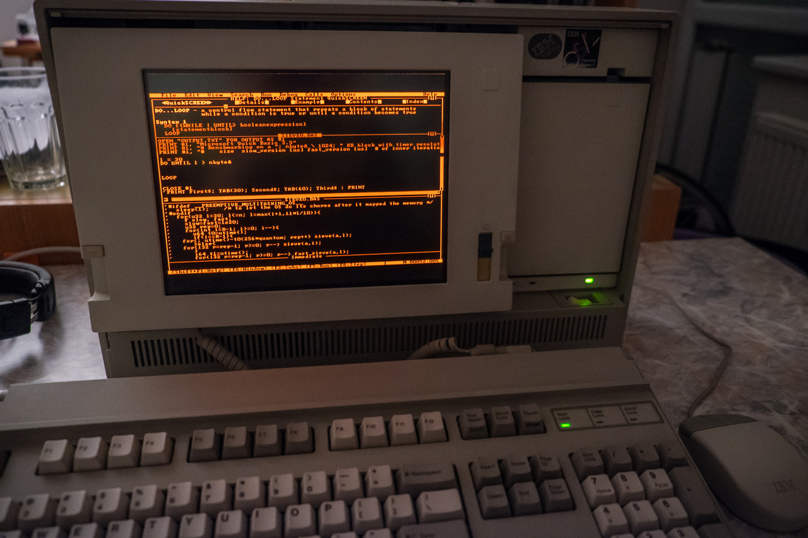

50-line text mode on a gas-plasma screen
I took this photo while working on the MS QuickBasic version of our benchmark (previously written in C and Assembly). The goal was to compare speed of different languages and compilers. This required me to relearn BASIC so I always needed to see online help, my BASIC code and the original C code on a single screen. Switching a screen into the VGA 80x50-character mode is invaluable in these situations.
Regarding the results: I tested all versions of our benchmark, which is mostly about integer performance and memory access (similar to compiling and XML parsing), on this IBM PS/2 P70 with a 20-MHz 386 (DX). Interpreted QuickBasic 4.5 version was used as a baseline (1x). These are the speed-ups:
- Compiled QuickBasic = 3x
- Borland C++ (8086 instructions) = 15x
- Borland C++ (386 instructions) = 33x
- Hand-tuned Assembly (386 protected mode) = 70x
- Metaware High C/C++ (386 protected mode) = 70x